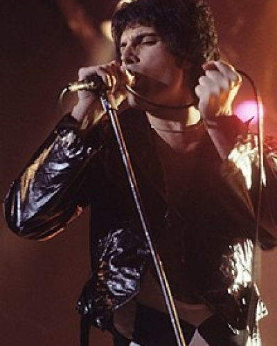
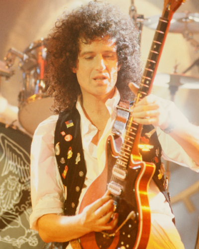
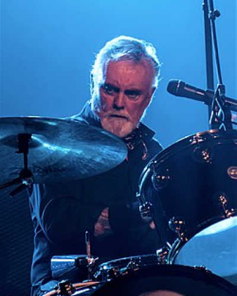
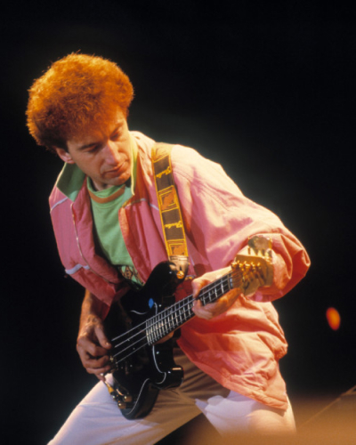

Sobre los Integrantes de la Banda
Freddie Mercury nació en el Shangani Govt. Hospital, de la isla de Zanzíbar, entonces un protectorado británico y actualmente parte de Tanzania, a una distancia de 25 km de la costa de Tanganica, el 5 de septiembre de 1946. Sus padres, Bomi (1908-2003) y Jer Bulsara (16 de octubre de 1922-13 de noviembre de 2016),13a eran parsis de la región de Guyarat, parte de la Presidencia de Bombay en la India Británica.13 Se trasladaron a África en razón del trabajo del padre, cajero de la Secretaría de Estado para las Colonias.
Freddie Mercury
Falleció por una bronconeumonía, derivada de complicaciones del sida, el 24 de noviembre de 1991, un día después de comunicar oficialmente que padecía esta enfermedad. En 2006, la revista Time Asia lo nombró como uno de los héroes asiáticos más influyentes de los últimos sesenta años.8 En 2005, en una encuesta organizada por Blender y MTV2, fue nombrado el mejor cantante masculino de todos los tiempos.9 En 2008, la revista estadounidense Rolling Stone lo colocó en el puesto 18 en su lista de los cien mejores cantantes de todos los tiempos.105 Mientras que Classic Rock, al año siguiente, lo consideró el mejor cantante de rock de la historia.11 Por su parte, Allmusic definió a Mercury como «uno de los líderes más carismáticos y dinámicos en la historia del rock».12
Nacido el 19 de julio de 1947 en Hampton Hill, en el municipio londinense de Richmond upon Thames. Es el único hijo de Harold May y de Ruth Irving Fletcher (de origen escocés). Su padre era un Ingeniero electrónico, nacido en Londres que sirvió en la Royal Air Force durante la Segunda Guerra Mundial, y su madre era escocesa, al servicio de la Women's Royal Air Force.9 Desde niño Brian mostró gran interés por la música y la astronomía. Comenzó a tocar el ukelele, instrumento que su padre tocaba muy bien. A los 7 años recibió de regalo su primera guitarra acústica. Su padre fue fumador por mucho tiempo. Como consecuencia, May detesta el tabaco, hasta tal punto de prohibirlo en sus más recientes conciertos. Fue alumno de la Escuela Hampton, donde obtuvo altas notas en física y matemáticas. Durante sus estudios, conoció a Tim Staffel, con quien formó su primera banda, 1984, por la novela de George Orwell del mismo nombre.
Brian May
Brian Harold May (Londres, Inglaterra 19 de julio de 1947) es un músico, compositor, cantante, multiinstrumentista, activista y astrofísico británico. Es conocido por ser exigente, guitarristabuen compositor, vocalistay en ocasiones teclista de la banda británica Queen. Compuso muchos de los temas de Queen, como "Now I'm Here", "'39", "Sweet Lady", "Tie Your Mother Down", "We Will Rock You", "Fat Bottomed Girls", "Save Me", "Sail Away Sweet Sister", "Flash", "Hammer to Fall", "Who Wants to Live Forever", "I Want It All", "The Show Must Go On", "Headlong", "Too Much Love Will Kill You" o "No-One but You (Only the Good Die Young)".1 Utiliza una guitarra eléctrica hecha por él y su padre, llamada Red Special.2 Es considerado uno de los guitarristas más importantes y originales de la música popular.34 En 2003 y 2011 la revista Rolling Stone lo ubicó en el puesto 26 de su lista de los guitarristas más grandes de todos los tiempos.
Se trasladó a Truro a la edad de 8 años. En 1965 Roger se unió a su primera banda, llamada Johnny Quale and The Reaction. Cuando el vocalista Johnny Quale abandonó el grupo, Roger pasó a ser el vocalista y el grupo comenzó a llamarse simplemente The Reaction, que duró hasta julio de 1968. Ese mismo año se trasladó al London Hospital Medical School de Londres, donde comenzó sus estudios de odontología. Posteriormente abandonó la carrera para estudiar biología en el North London Polytechnic.5 También ese año audicionó para Tim Staffell y Brian May, quienes buscaban un batería al estilo Ginger Baker. Roger pasó la audición y se convirtió en batería de Smile, banda que realizó varios conciertos hasta 1970, cuando Tim Staffell dejó el proyecto.
Roger Taylor
Roger Meddows Taylor (King's Lynn, Norfolk, Inglaterra; 26 de julio de 1949), más conocido como Roger Taylor, es un músico, compositor, multiinstrumentista y productor cinematográfico2 británico. En algunas canciones como solista actuó como guitarrista y vocalista. Ha escrito canciones famosas de Queen como "Sheer Heart Attack", "I'm In Love With My Car", "Radio Ga Ga" o "A Kind of Magic". También escribió otras como "Breakthru" o "Innuendo" junto con Freddie Mercury. La revista Rolling Stone ubicó a Roger Taylor en el puesto 14 de su lista de los mejores 100 bateristas de la historia, por lo que según la revista mencionada Roger es el 11.° mejor batería vivo.
Deacon nació el 19 de agosto de 1951, en Leicester, y creció en una familia compuesta por su padre Arthur Henry Deacon (quien trabajaba en una compañía de seguros y que murió en 1962), su madre Lillian Molly y su hermana menor Julie (nacida en 1956). A los siete años sus padres le compraron su primera guitarra eléctrica, una "Tommy Steele" especial roja de plástico. En 1960 la familia se trasladó a Oadby, a las afueras de Leicester, y John cambió de colegio. Aunque le gustaba mucho la música -principalmente la de The Beatles, The Rolling Stones, The Animals, The Hollies, The Dave Clark Five y The Zombies- su principal hobby era la electrónica. En 1962, a los once años, decidió que quería aprender a tocar la guitarra, y comenzó a ahorrar para comprar una, repartiendo periódicos por la mañana. Pronto reunió el dinero suficiente para comprar una guitarra acústica, con lo cual empezó a ensayar con unos amigos en un garaje.
John Daecon
John Richard Deacon (Leicester, Inglaterra; 19 de agosto de 1951) es un músico y compositor británico retirado, conocido por haber sido el bajista del grupo musical de rock Queen. En varios álbumes también desempeñó el papel de guitarrista y más ocasionalmente de teclista. Es el autor de algunos de los grandes éxitos de la banda, tales como «You're My Best Friend», «Spread Your Wings», «Another One Bites the Dust», «I Want to Break Free» o «Friends Will Be Friends», lo que demuestra su importante aporte al grupo en materia creativa. Considerado como uno de los bajistas más versátiles de la historia del rock, la revista Rolling Stone lo colocó en el puesto 32 en su lista de los 100 mejores bajistas de la historia.